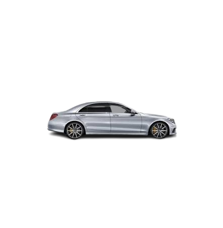
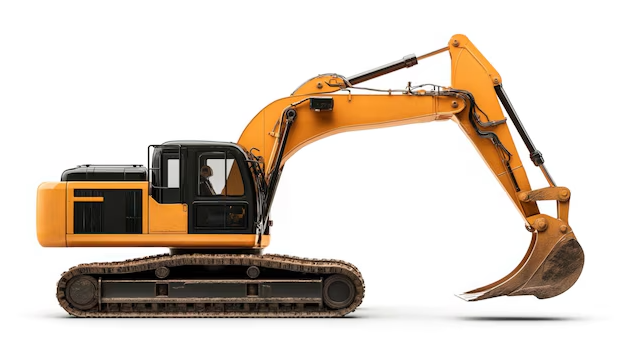
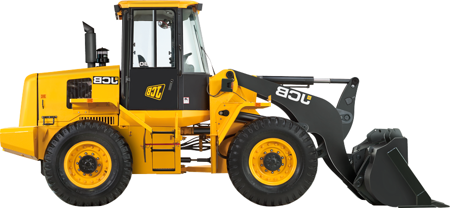
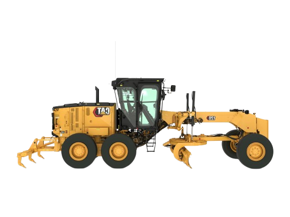
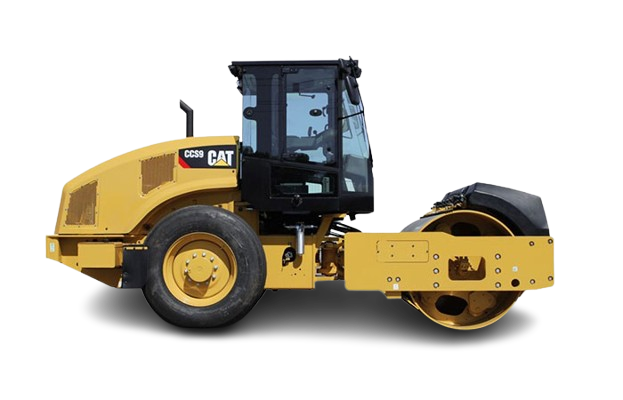

Bauleiter / Tiefbau

Motivierter Bauleiter mit einem Diplom als Fachtechniker im Bereich Öffentliche Arbeiten und Tiefbau (OFPPT). Erfahrung in der Organisation von Baustellen, Teamführung und Maschinenbedienung. Ich suche eine Stelle in Deutschland, um meine Kenntnisse weiterzuentwickeln.


Komplette Neugestaltung und funktionale Aufwertung der urbanen Parkanlage im Viertel Moulay Ismail (Avenue Zarbia). Koordination der Erdarbeiten und der neuen Wegegestaltung.
Bilder ansehenPlanung und bauliche Umsetzung von Fußgängertreppen zur Verbesserung der Zugänglichkeit innerhalb der Parkanlage. Verantwortung für Schalung, Materialauswahl und Betonierung.
Bilder ansehenDurchführung von Tiefbauarbeiten zur Verlegung einer Hauptabwasserleitung an der Avenue Zarbia nahe der Winxo-Tankstelle. Überwachung des präzisen Erdaushubs und der Rohrverlegung.
Bilder ansehen

Hier finden Sie meine offiziellen Qualifikationen und Diplome.
Haben Sie Fragen oder ein neues Projekt? Kontaktieren Sie mich direkt über einen der folgenden Kanäle: